Stack overlapping objects on top of one another.
position_stack() stacks bars on top of each other;
position_fill() stacks bars and standardises each stack to have
constant height.
position_stack(vjust = 1, reverse = FALSE) position_fill(vjust = 1, reverse = FALSE)
Arguments
- vjust
- Vertical adjustment for geoms that have a position
(like points or lines), not a dimension (like bars or areas). Set to
0to align with the bottom,0.5for the middle, and1(the default) for the top. - reverse
- If
TRUE, will reverse the default stacking order. This is useful if you're rotating both the plot and legend.
Details
position_fill() and position_stack() automatically stack
values in reverse order of the group aesthetic, which for bar charts is
usually defined by the fill aesthetic (the default group aesthetic is formed
by the combination of all discrete aesthetics except for x and y). This
default ensures that bar colours align with the default legend.
There are three ways to override the defaults depending on what you want:
- Change the order of the levels in the underyling factor. This will change the stacking order, and the order of keys in the legend.
- Set the legend
breaksto change the order of the keys without affecting the stacking. - Manually set the group aesthetic to change the stacking order without affecting the legend.
Stacking of positive and negative values are performed separately so that positive values stack upwards from the x-axis and negative values stack downward.
See also
See geom_bar and geom_area for
more examples.
Other position adjustments: position_dodge,
position_identity,
position_jitterdodge,
position_jitter,
position_nudge
Examples
# Stacking and filling ------------------------------------------------------ # Stacking is the default behaviour for most area plots. # Fill makes it easier to compare proportions ggplot(mtcars, aes(factor(cyl), fill = factor(vs))) + geom_bar()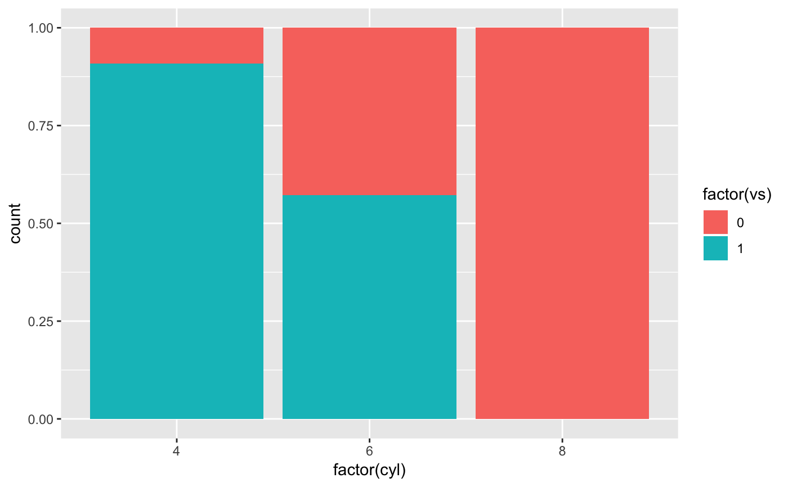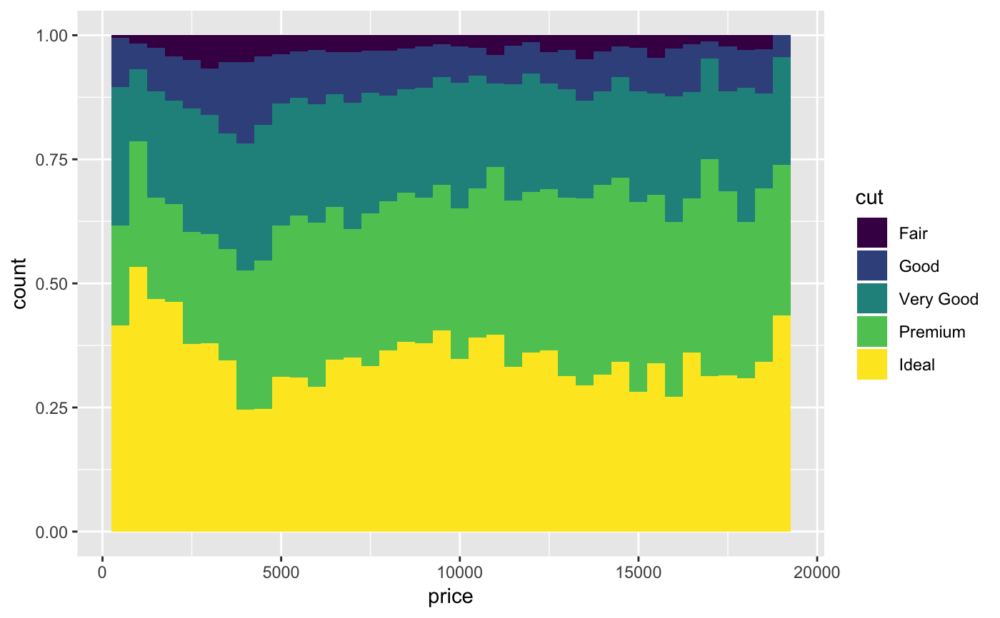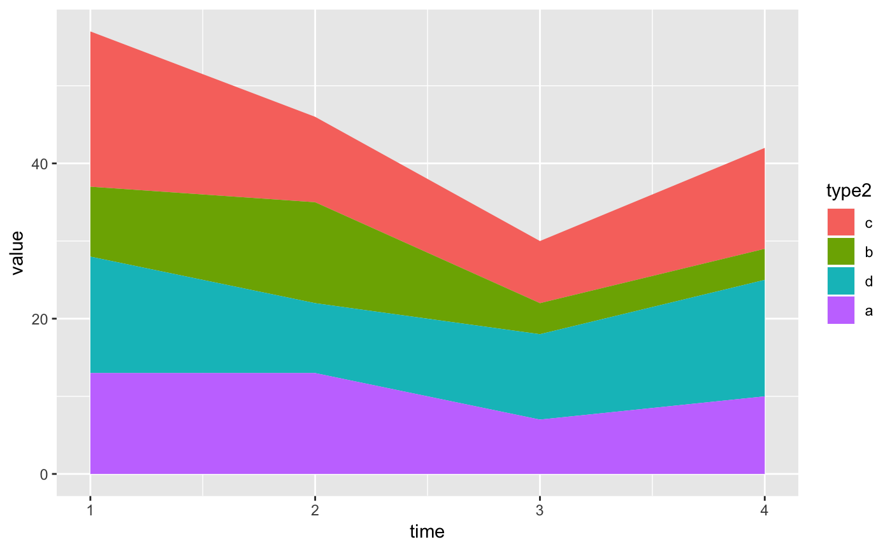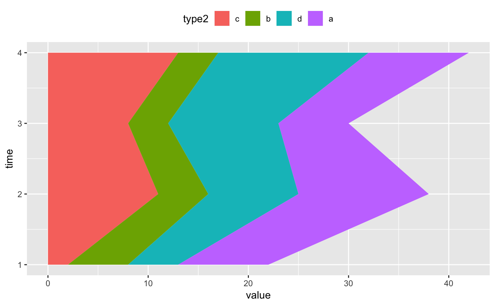# Stacking is also useful for time series series <- data.frame( time = c(rep(1, 4),rep(2, 4), rep(3, 4), rep(4, 4)), type = rep(c('a', 'b', 'c', 'd'), 4), value = rpois(16, 10) ) ggplot(series, aes(time, value)) + geom_area(aes(fill = type))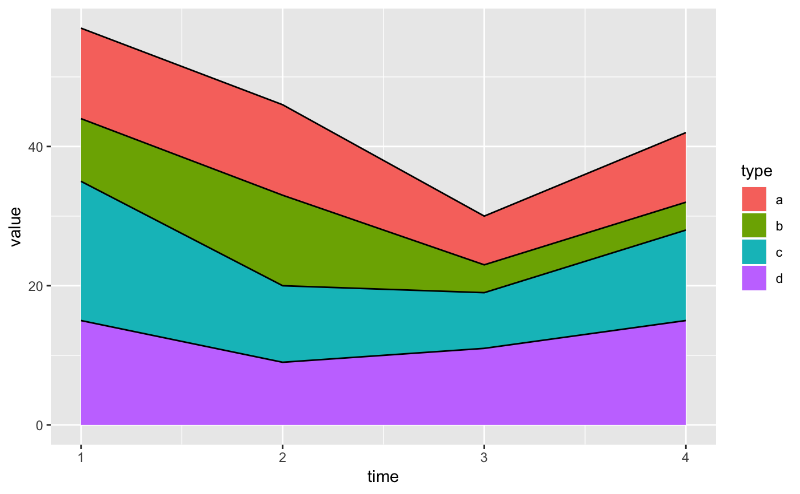# Stacking order ------------------------------------------------------------ # You control the stacking order by setting the levels of the underlying # factor. See the forcats package for convenient helpers. series$type2 <- factor(series$type, levels = c('c', 'b', 'd', 'a')) ggplot(series, aes(time, value)) + geom_area(aes(fill = type2))# You can change the order of the levels in the legend using the scale ggplot(series, aes(time, value)) + geom_area(aes(fill = type)) + scale_fill_discrete(breaks = c('a', 'b', 'c', 'd'))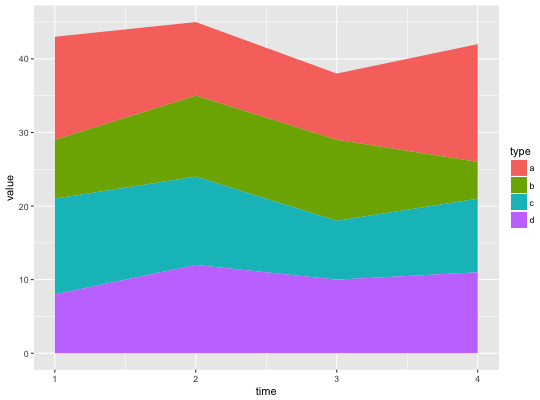# Non-area plots ------------------------------------------------------------ # When stacking across multiple layers it's a good idea to always set # the `group` aethetic in the ggplot() call. This ensures that all layers # are stacked in the same way. ggplot(series, aes(time, value, group = type)) + geom_line(aes(colour = type), position = "stack") + geom_point(aes(colour = type), position = "stack")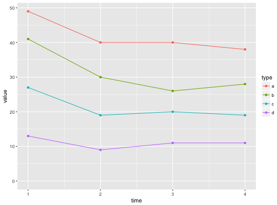ggplot(series, aes(time, value, group = type)) + geom_area(aes(fill = type)) + geom_line(aes(group = type), position = "stack")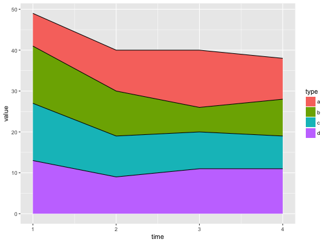# You can also stack labels, but the default position is suboptimal. ggplot(series, aes(time, value, group = type)) + geom_area(aes(fill = type)) + geom_text(aes(label = type), position = "stack")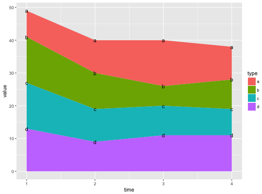# You can override this with the vjust parameter. A vjust of 0.5 # will center the labels inside the corresponding area ggplot(series, aes(time, value, group = type)) + geom_area(aes(fill = type)) + geom_text(aes(label = type), position = position_stack(vjust = 0.5))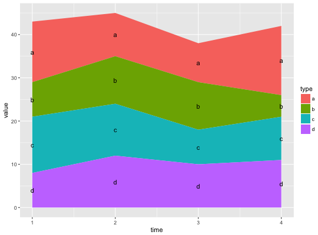# Negative values ----------------------------------------------------------- df <- tibble::tribble( ~x, ~y, ~grp, "a", 1, "x", "a", 2, "y", "b", 1, "x", "b", 3, "y", "b", -1, "y" ) ggplot(data = df, aes(x, y, group = grp)) + geom_col(aes(fill = grp), position = position_stack(reverse = TRUE)) + geom_hline(yintercept = 0)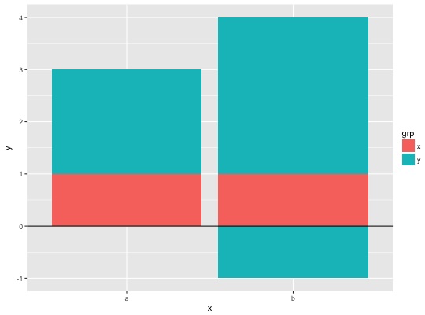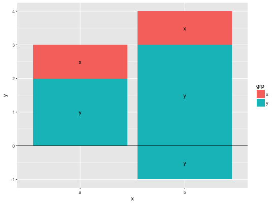